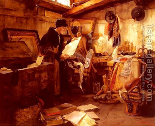

Shabbat 13 - How Beit Shammai outnumbered Beit Hillel
The previous rules safeguarding against accidental carrying in the street on Shabbat (including one that a zav may not eat together with his wife who happens to be a zavah , since eating together may lead to cohabitation) were from the eighteen rules that were promulgated on one day when Beit Shammai outnumbered Beit Hillel.
We learned before about Chanina ben Chizkiyah who secluded himself for a very long time, in the attic of a house, to investigate the difficult passages in the book of Ezekiel. The Sages of both Beit Shammai and Beit Hillel used to visit him, and on a specific day the students of Beit Shammai outnumbered those of Beit Hillel, seized the chance, took a vote, and promulgated the eighteen decrees, part of which we have already seen.
In addition, Chanina ben Chizkiyah and colleagues wrote the "Scroll of Fasts," which listed the days on which fasts were prohibited because those days were declared minor celebrations, due to the miraculous salvations events that occurred on them. However, later, due to the many troubles and sufferings following the destruction of the Second Temple, most of these celebrations were abolished. They merited to do it, because they cherished sufferings that befell them, and therefore merited salvations.
Rabban Shimon ben Gamliel said, "We too cherish sufferings and would like to record the dates of our deliverance, but the troubles are so many that we would not be able to celebrate all the corresponding festivals." Some say, we are insensitive to both sufferings and deliverances.
Art: Alfons Spring - In The Attic